| 棋型 | 圖例 |
| 長連： 六子或六子以上的連線。 |
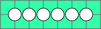 |
| 五： 連續五子的連線。 五子棋獲勝的條件。 |
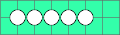 |
活四： |
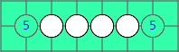 |
死四：
|
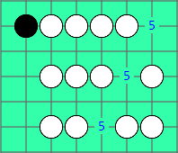 |
活三： |
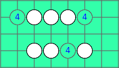 |
| 死三： 次一子想做四僅能形成死四， 又稱眠三。 |
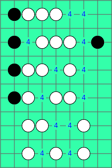 |
活二： |
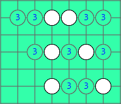 |
| 死二： 次一子想做三僅能形成死三。 |
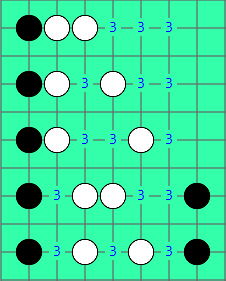 |
| 活一： 次一手可形成活二。 |
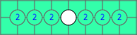 |
| 死一： 次一手想做二僅能形成死二。 |
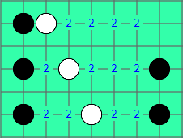 |
看過棋型後，可以推導出一些邏輯
１活型或死型的定義，是以次一手可以形成的棋型來認定。
２活型至少要有６格的空間。
３死型是一端被對方擋住或遇到盤端，或者只有５格空間。
以上是無禁手規則（GOMOKU），各種棋型的判定標準，若是有禁規則（RENJU），黑方因有長連的限制，標準略有不同，可參考禁手篇。
進攻方式在上方棋型的圖例都已有標註，簡單分類如下
| 長連、五、活四 | 先下出即可勝，長連的勝負判定依規則而定。 |
| 死四、活三 | 最基本的進攻，對方在沒有更快獲勝的下法時，必需花一子來防守，所以一子形成雙活三、四三或雙四，即為五子棋最基本的取勝棋型。 |
| 死三、活二 | 進攻材料，次一手可發動進攻，若有其他子力接應，則可形成連續進攻。 |
| 死二、活一 | 次一手可成為進攻材料，常做為連續進攻的接應。 |
| 死一 | 不太容易做為進攻材料，因還需花二手補強。 |
死型的防守點和進攻點一樣，可參考上方棋型的圖例。
活型的防守點，下方以白方防守活三及活二為例：
A從左或右擋住 下方三個活二，Ｃ位或Ｃ位之外也可限縮黑方空間，但離得越遠越沒有防守效果 |
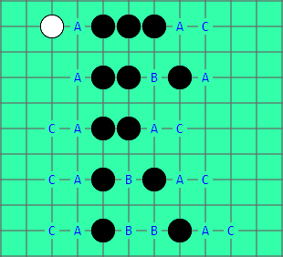 |